Your own cues
Notes, a photo of a few bars, or notation, pinned anywhere on a chart. Only you see them; the band’s chart doesn’t change.
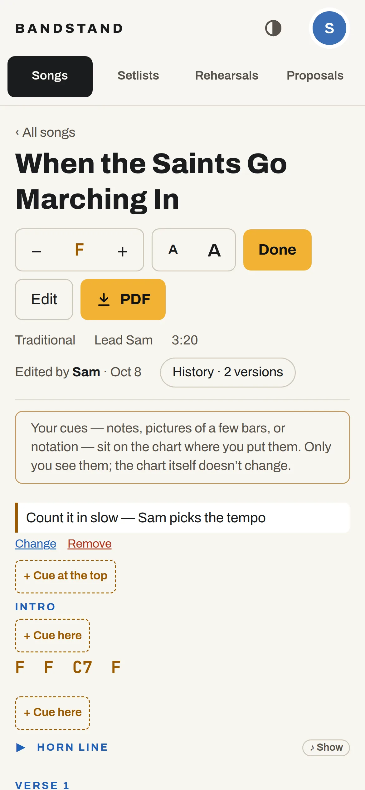
For working bands
Charts, setlists and rehearsals for the whole band — on every phone, tablet and laptop. In any key. Even with no signal.
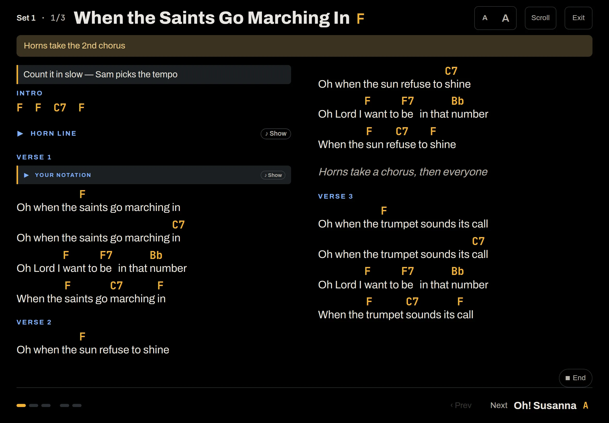
One chart, and everyone reads the same one. Fix a chord once and the whole band has it tonight — with every earlier version kept.
Charts
Every song is a clean chord chart, every section written out in full. Move it to any key with a tap — chords and notation move together — and set the text as big as your eyes need.
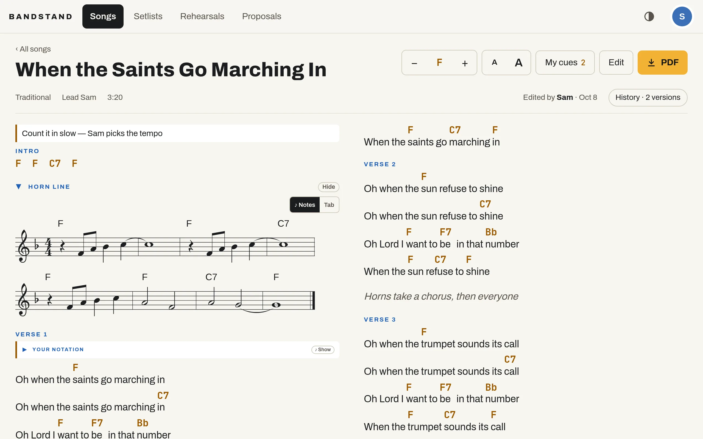
A semitone at a time. Each device remembers the key you chose.
Small A, big A — for the bandstand three metres away.
A PDF of any song or the whole set, in the set’s keys, stamped with its version.
Chord diagrams
Every chord opens its notes on a keyboard and a fingering for guitar, with other voicings a swipe away. The sub who learned the set this morning will love you.
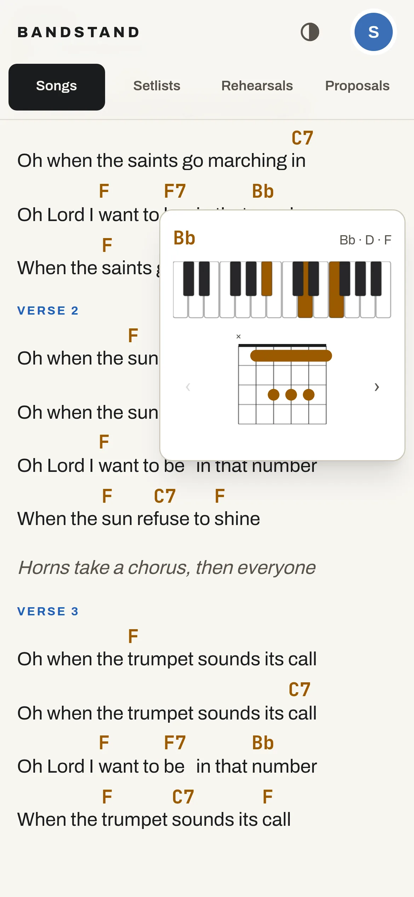
Written-out parts
Riffs and horn lines fold away, so the chart stays easy to read on stage. Open one while you’re learning it: notation for horns and keys, tab for guitar and bass.
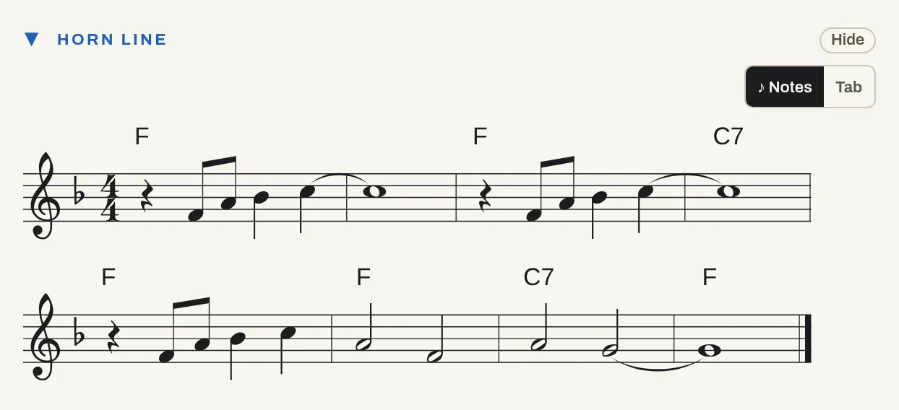
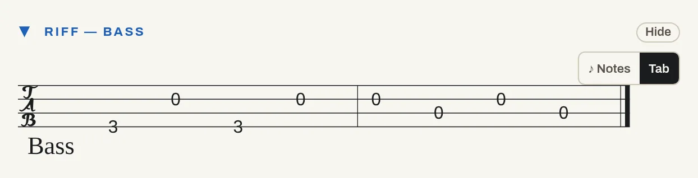
Performance mode
Open the setlist, press Perform, and the whole gig is on your stand: chart only, in the set’s keys, with the singer’s note on top.
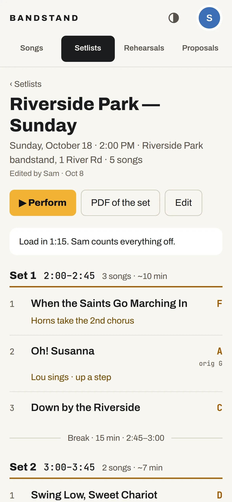
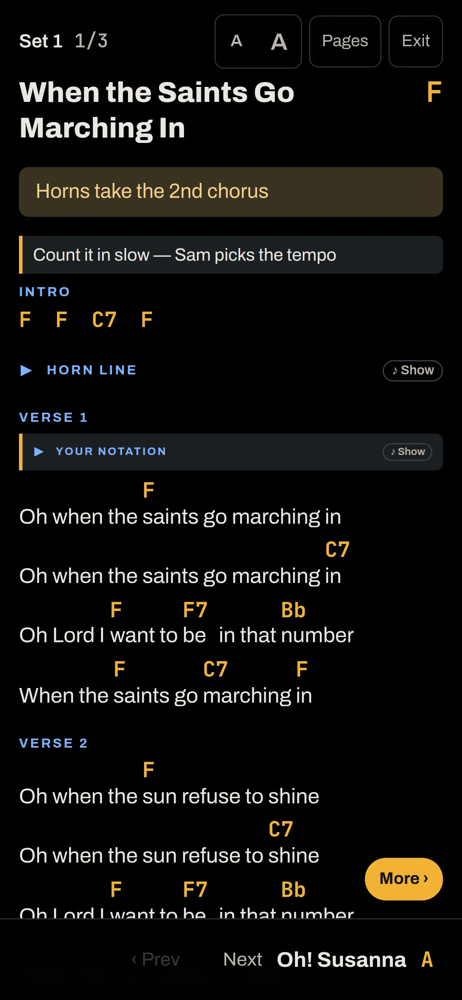
Any Bluetooth page-turn pedal. It turns the page, then the song.
Fitted to an iPad in columns, or one long column on a phone.
Open the setlist once and the whole gig is saved on the device.
The screen never dims mid-song. Dark for the stage, light for rehearsal.
The whole band
Notes, a photo of a few bars, or notation, pinned anywhere on a chart. Only you see them; the band’s chart doesn’t change.

Anyone in the band can fix a chart. History shows who changed what, line by line, and puts an old version back.
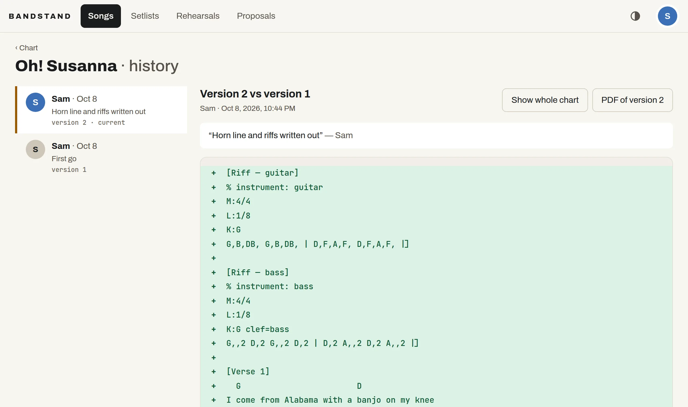
Everyone marks the days they can’t. Bandstand finds the ones that work and names who hasn’t answered.
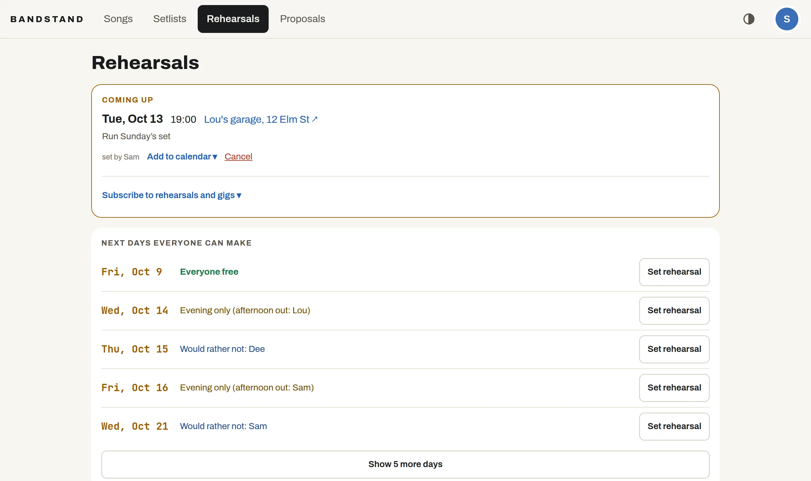
Find any song by title, singer or writer. Gig-ready ones get a green dot; Learning shows the ones you’re still working up.
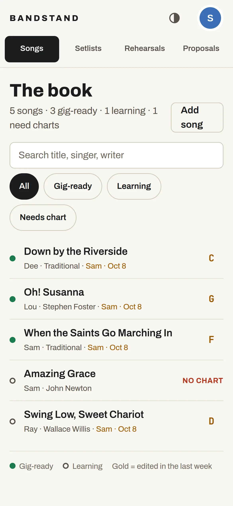
Propose a song; when enough of the band votes for it, it joins the book to learn.
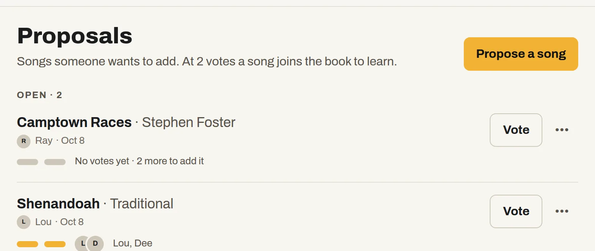
Install it on your home screen and get a notification when someone edits a chart, a setlist or a rehearsal.
Add it to an iPhone, iPad or Android home screen and it opens full screen, like any other app.
Pricing
A year, for the whole band, however many of you there are. That’s what the server costs to run, split between bands. Or run it yourself, free.
Hosted
$12 a band, a year
Self-hosted
Free open source, AGPL
Self-hosted · open source
Bandstand runs on your own server in Docker: Next.js and Postgres, nothing else. Your charts stay with you, and the code is free under the AGPL.
# clone it
git clone https://github.com/beingforthebenefit/Bandstand.git
cd Bandstand
# .env.production: POSTGRES_PASSWORD, NEXTAUTH_SECRET
make deploy
# your band, you as its admin, and your password
dc="docker compose -f docker-compose.server.yml --env-file .env.production"
$dc exec app npx tsx scripts/create-band.ts "Your Band" you@example.com "You"
$dc exec app npx tsx scripts/set-password.ts you@example.com